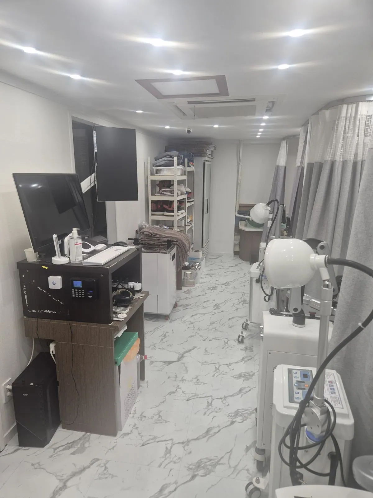

좋은꿈참사랑한의원은 평일 저녁 8시까지 진료해, 퇴근이나 하교 뒤에도 통증·잠·소화·한약 상담과 교정추나, 침, 초음파 진단을 이어서 상담할 수 있습니다.
한의원에서 함께 살필 것
- 하루 종일 앉아 있다 퇴근할 때 목·어깨·허리가 굳는 경우 자세와 근육의 긴장을 함…
- 저녁 늦게 먹고 밤잠이 얕아지는 경우 식사 시간과 잠의 모양을 함께 살핍니다.
- 야근이 이어져 몸이 지치는 경우 하루 리듬과 휴식을 함께 살핍니다.
먼저 확인이 필요한 신호
- 갑자기 심한 가슴 통증이나 숨 가쁨이 있는 경우
- 한쪽 팔다리에 힘이 빠지거나 말이 어눌해지는 경우
- 의식이 흐려지거나 심한 두통이 갑자기 온 경우

퇴근 뒤에 들러도 통증, 잠, 소화, 한약 상담과 교정추나, 침, 초음파 진단까지 이어서 상담할 수 있습니다. 서울 동작구 상도동의 좋은꿈참사랑한의원은 평일 오전 9시 30분부터 저녁 8시까지 진료합니다(점심시간 13시~14시). 낮에 시간을 내기 어려운 직장인과 학생이 퇴근이나 하교 뒤에 들르는 경우가 많습니다.
왜 저녁 시간에 찾는 분이 많을까요
- 상도동·노량진에는 낮에 일하는 직장인과 학원가를 오가는 수험생이 많아, 퇴근이나 수업 뒤에야 시간이 나는 경우가 많습니다.
- 하루 종일 앉아 있거나 서서 일한 뒤에는 목·어깨·허리의 불편이 가장 또렷하게 느껴져, 그때 상담하면 이야기가 구체적입니다.
- 저녁 식사 시간과 잠드는 시각처럼 하루 리듬을 함께 이야기하기에도 좋은 시간대입니다.

저녁 시간에 상담할 수 있는 것
- 목·어깨·허리·무릎 같은 통증 상담과 교정추나
- 침과 약침 치료 상담
- 잠들기 어렵거나 자주 깨는 불면 상담
- 소화, 식욕, 다이어트와 관련된 식사 상담
- 체질과 복용 중인 약을 확인하는 한약 상담
- 통증 부위를 눈으로 확인할 필요가 있을 때의 초음파 진단
- 교통사고 뒤 남은 불편 상담, 수험생 상담
방문 전에 확인해 두면 좋은 것
- 평일 진료는 저녁 8시까지이고, 마감 직전에 도착할 때는 접수가 가능한 시각을 네이버 예약이나 전화로 먼저 확인하세요.
- 처음 오신다면 접수와 문진에 시간이 걸리니 마감에 쫓기지 않는 시각을 권합니다.
- 복용 중인 약 이름과 건강검진 결과가 있으면 가져오세요.
- 상도역 3번 출구에서는 걸어서, 노량진역에서는 동작01 마을버스로 오실 수 있습니다.

한의원에서 함께 살필 수 있는 경우
- 하루 종일 앉아 있다 퇴근할 때 목·어깨·허리가 굳는 경우 자세와 근육의 긴장을 함께 살핍니다.
- 저녁 늦게 먹고 밤잠이 얕아지는 경우 식사 시간과 잠의 모양을 함께 살핍니다.
- 야근이 이어져 몸이 지치는 경우 하루 리듬과 휴식을 함께 살핍니다.
처음 오시면 접수, 상담, 진맥과 필요하다고 판단될 때의 진찰(설진·복진·초음파 등), 상태에 맞는 치료, 귀가 전 안내 순서로 진행합니다. 다시 오시면 지난번 이야기부터 이어서 여쭙습니다.
이렇게 기록해 오시면 상담이 쉬워집니다
- 퇴근 뒤 가장 불편한 부위와 그 정도
- 하루 앉아 있는(서 있는) 시간
- 저녁 식사 시각과 잠드는 시각
- 복용 중인 약과 건강검진 결과

이런 증상은 먼저 확인이 필요합니다
- 갑자기 심한 가슴 통증이나 숨 가쁨이 있는 경우
- 한쪽 팔다리에 힘이 빠지거나 말이 어눌해지는 경우
- 의식이 흐려지거나 심한 두통이 갑자기 온 경우
이런 증상은 한의원 진료 시간을 기다리지 말고 119나 가까운 응급실을 이용하세요. 복용 중인 약은 처방한 의사와 상의 없이 줄이거나 끊지 않습니다.
자주 묻는 질문
저녁에 처음 방문해도 진료를 받을 수 있나요?
평일 저녁 8시까지 진료하며, 처음 방문이라면 접수와 문진 시간을 고려해 여유 있게 오시길 권합니다.
저녁 진료에도 점심시간이 있나요?
평일 점심시간은 13시부터 14시까지입니다. 그 외 평일 시간에는 진료합니다.
예약은 어떻게 하나요?
네이버 예약이나 전화, 카카오톡 채팅 상담으로 문의할 수 있습니다.
저녁에 와서 한약 상담까지 받을 수 있나요?
평일 저녁에도 상담할 수 있습니다. 다만 상담에 시간이 걸리니 마감보다 여유 있게 오시길 권합니다.
이 글은 일반적인 건강 정보이며 개인의 진단이나 치료를 대신하지 않습니다. 증상이 있거나 복용 중인 약이 있다면 진료를 통해 확인하세요. 치료 효과는 개인마다 다를 수 있습니다.
작성 기준: 일반적으로 알려져 있는 건강 정보를 참고해 정리했습니다(대표원장 감수). 증상 기록은 1~2주 동안 하루 1회, 비슷한 시간에 적어 오시면 지난 상태와 비교하기 쉽습니다.
좋은꿈참사랑한의원은 재진 때 지난번 이야기부터 이어서 여쭙니다. 진료시간과 예약은 오시는 길에서 확인하세요.